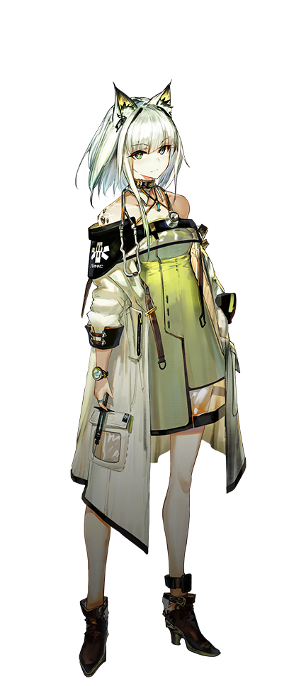

-

阿米娅
AMIYA
cv:黑泽朋世
罗德岛的公开领袖，在内部拥有最高执行权。虽然，从外表上看起来仅仅是个不成熟的少女，实际上，她却是深受大家信任的合格的领袖。现在，阿米娅正带领着罗德岛，为了感染者的未来，为了让这片大地挣脱矿石病的阴霾而不懈努力。 -

凯尔希
KAL'TSIT
cv:日笠阳子
罗德岛最高管理者之一，阿米娅的直接辅导者。 罗德岛医疗部门的总负责人。 作为罗德岛的老成员，凯尔希医生是在阿米娅背后最稳固的援护者。 -
红
PROJEKT RED
cv:小清水亚美
红，身份不明，履历缺失，由凯尔希医生接收、监护并担保。 于机动作战，特种作战与隐秘作战中表现出极高天赋，成绩斐然。 现于凯尔希医生的指导下，作为特种干员为罗德岛提供服务。 -
杜宾
DOBERMANN
cv:种崎敦美
前玻利瓦尔军人，加入罗德岛后担任教官，主要负责基层和新晋干员培训，必要时刻，也会负责对俘虏的审讯。 熟悉各种规模的军事行动，自身作为士兵的素养也极高，作为近卫干员，在第一线带领队伍冲锋陷阵。 -
临光
NEARL
cv:佐仓绫音
临光，前卡西米尔耀骑士，感染者援助团体“使徒”的一员。在掩护己方队员、机动作战、歼灭战与开阔地带作战中体现出极高的战斗技巧和个人军事素养。 现于罗德岛作为重装干员行动，并于现场提供战术指挥支援。 -
赫默
SILENCE
cv:鬼头明里
赫默，莱茵生命有限公司源石有关项目研究员，曾主管数项未知应用研究，同期亦主持数个矿石病临床试验项目。 现于罗德岛为多项行动提供战场医疗救护服务。 -
伊芙利特
IFRIT
cv:花守由美里
伊芙利特，前莱茵生命医疗对象，重度感染者。拥有极高的源石适应性，伴随有多发性点火现象。进入莱茵生命前的履历缺失。 现于罗德岛接受治疗，由医疗干员赫默担任监护与担保人。 -
白面鸮
PTILOPSIS
cv:金元寿子
白面鸮，前莱茵生命公司，数据维护专员。在医疗类源石技艺领域取得不菲成就，于医疗数据维护，常规医疗方案应用，多项目医疗行为等相关领域，拥有丰富经验。 现于罗德岛担任医疗干员，亦就职于医疗部门，某临床实验小组。同时，为罗德岛提供若干项医疗项目的相关辅助工作。 -
德克萨斯
TEXAS
cv:田所梓
企鹅物流员工，单兵作战能力出类拔萃。 于合约期内任企鹅物流驻罗德岛联络人员，同时为罗德岛的多项行动提供协助。 -

能天使
EXUSIAI
cv:石见舞菜香
能天使，拉特兰公民，适用拉特兰一至十三项公民权益。企鹅物流公司成员。从事秘密联络，武装押运等非公开活动，推测身份：信使。于合约期内任企鹅物流驻罗德岛联络人员，同时为罗德岛多项行动提供协助。 -
可颂
CROISSANT
cv:久保百合花
企鹅物流员工，于合约期内任企鹅物流驻罗德岛外派干员。 擅长防守，能同时牵制数个敌人，并拥有怪力，能用巨锤轻松击飞瘦弱的敌人。 -

陈
CHEN
cv:石上静香
陈，龙门高级警司，龙门近卫局特别督查组组长，毕业于维多利亚皇家近卫学校，成绩优异，表现突出。在龙门近卫局供职期间，力主取缔龙门境内非法活动，对抗暴力犯罪和有组织犯罪，追缉武装逃犯与国际重犯等行动，并取得多项重大成果。 现作为特别人员协助罗德岛行动，并为现场提供战术指挥支援。 -
星熊
HOSHIGUMA
cv:安野希世乃
星熊，龙门近卫局特别任务组精英干员。存在数项指控记录。 经龙门总督魏彦吾交涉，龙门近卫局依星熊的优异能力与良好表现，破格将其吸纳进近卫局特别督察组。在处理高危险性犯罪事件、要员保护、灾害紧急救援等领域表现出较高专业性。 现作为重装干员协助罗德岛行动，并为现场提供战术执行与指挥支援。